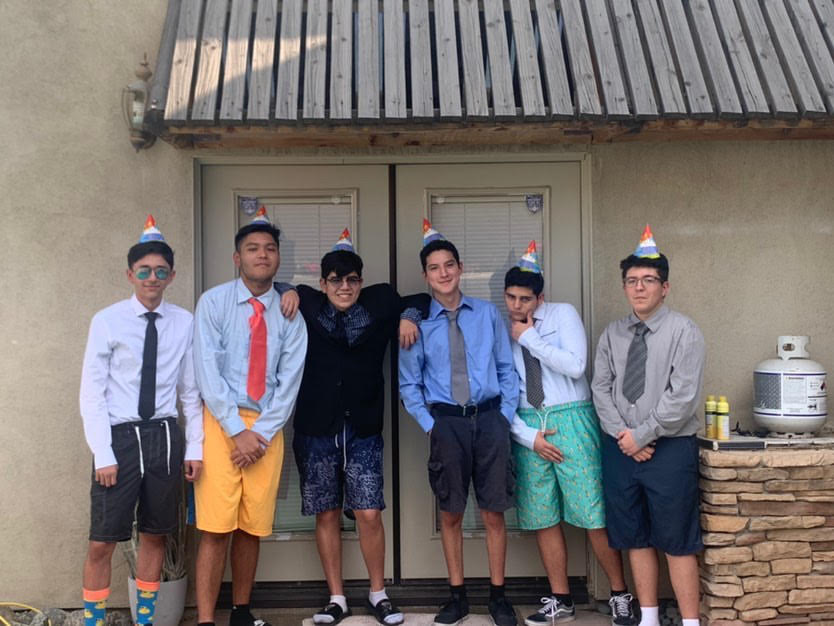

|  |
Career Goal:Have you ever felt tired of doing the same thing over and over again being forced to do work you don't wanna do? I feel like that's the majority of people nowadays. Hi my name is Anthony and my career goal is to do something that I find pleasurable and that can give me the neccessities to survive without the help of others. This might sound like a joke to you but I want to change the world on a global scale. I care more about the environment than money. So many hearts are broken everyday due to corrupt organizations and weirdos. Mark my words, 10 years from now Earth will be reborn. My plan for acheiving this goal is to have as many intellectual individuals who want to put work to make the world a better place one day at a time. This is my goal because nothing else satisfies me than making everyone happy, who deserve it of course ;) Strengths and personal qualities:I would say I would be perseverance and perceptive because no matter what I will push through and get what I wanna get because that's how life works if you treat life like a video game. You have to grind the experience points or the money to spend it what you truly desire. I would say I'm perceptive because I'm openminded to any topic or debate anyone wants to talk about. I won't judge or be easily aggravated since I know what if feels like to talk to a brick wall and when the debate isn't going anywhere. I like to reach enlightenment and enlighten others too so we would live in a society that everyone can part take in. Important achievements:I got first place freshmen year in Photo where you have to submit art created through graphics design on photoshop and I got first place in manipulation. I got Magna Cum Laude for having a 3.9 GPA. I got student of the month for English my Junior year. I also got perfect attendance my Junior year aswell. Your abilities and work skills:I have decent work ethic if I work by myself but it changes when I'm in a group, depending on the members if they cooperate or not. I can provide leadership, creativity, and diligent work ethic to the table. I can communicate with others and provide a supportive friendship if needed. Conclusion:I am your average Joe but with hidden super powers once you get to know me. I really care for others since no one knows the pain that they're hiding on the inside. I want to change the world so no one has to suffer but again you have to sacrifice everything in order to get what you desire. |